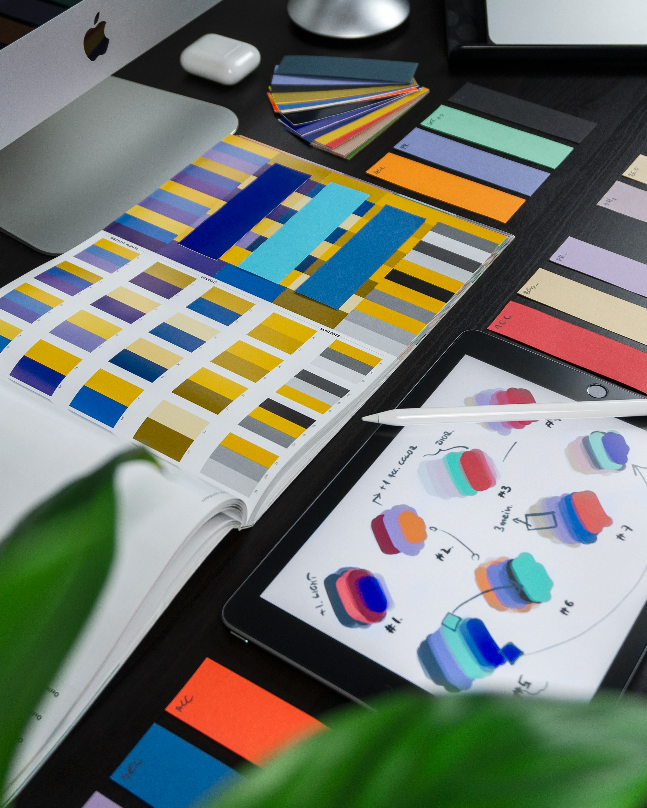
Design Foundations I
Digital Design Foundations I is an introductory course to using the Adobe Creative Cloud applications, such as Photoshop and Illustrator, at San Francisco State University. I went into this class with zero experience using these applications and had a lot of fun with the projects we were assigned!
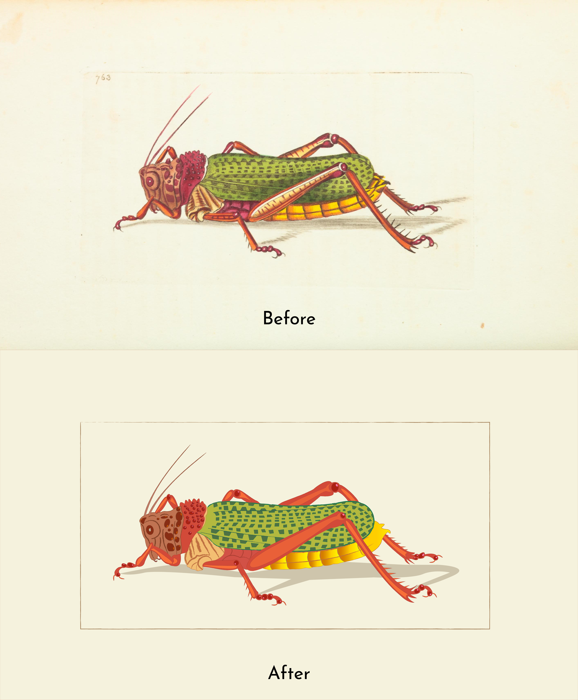


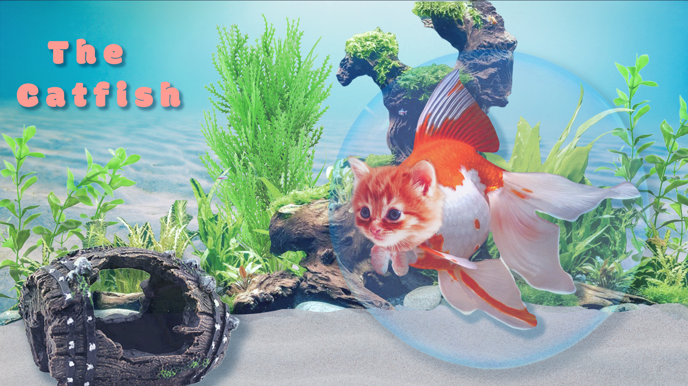
Final Project I
My final project was to redesign an album and poster for a real or fictional music artist. I chose to redesign the album The Divine Feminine by Mac Miller.
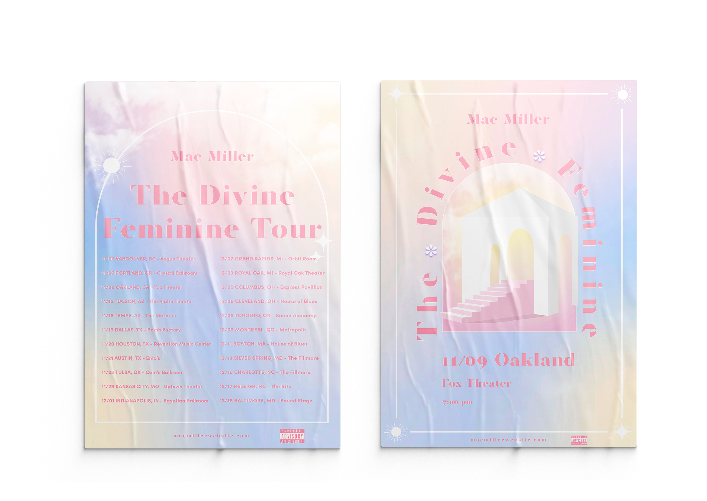
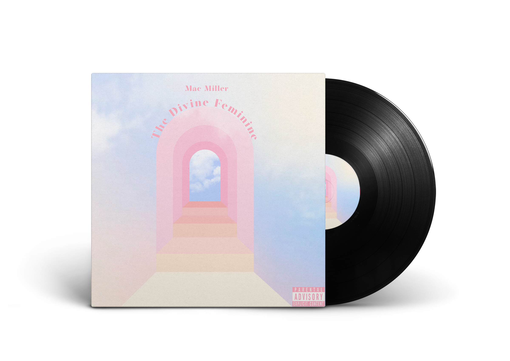
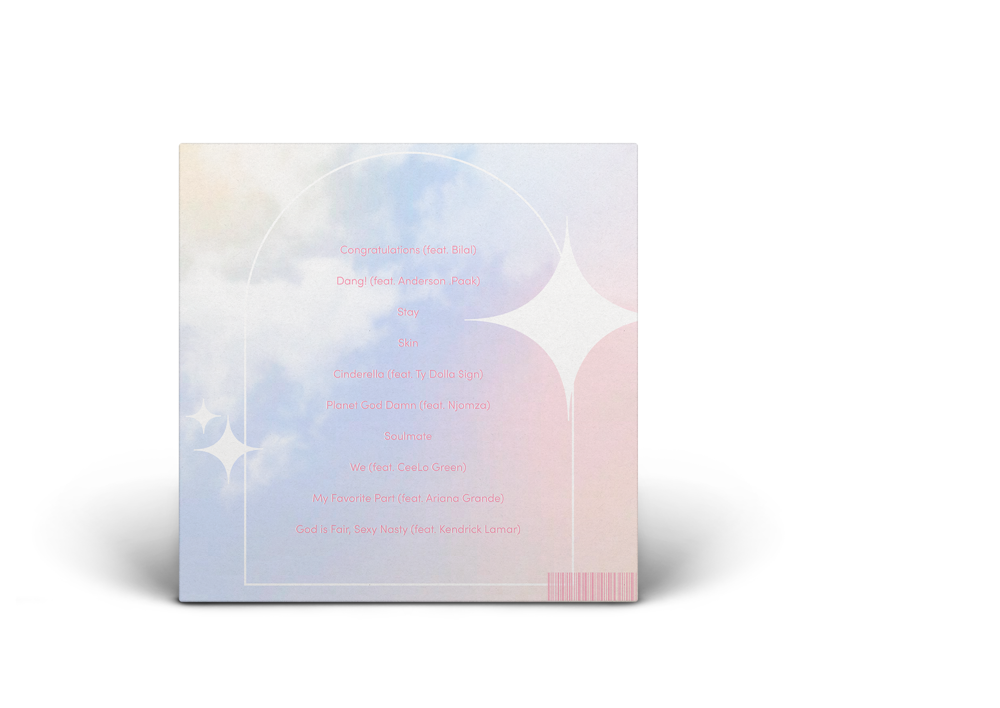
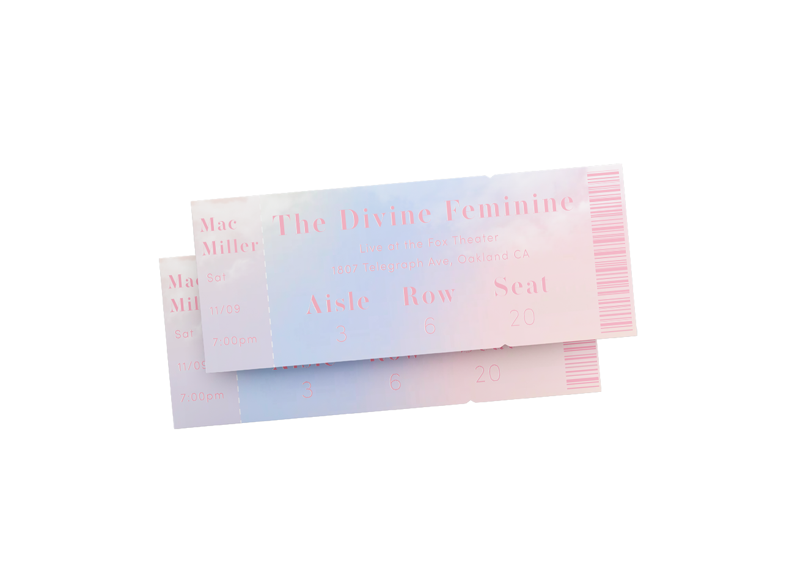

Design Foundations II
Digital Design Foundations II follows the Foundation I course, and builds more knowledge upon what is taught about Photoshop and Illustrator. Adobe Indesign is introduced in this course as well.
Final Project II
My final project was to create a travel poster and brochure for a real or fictional place. I chose to create merchandise for Panem from the Hunger Games.
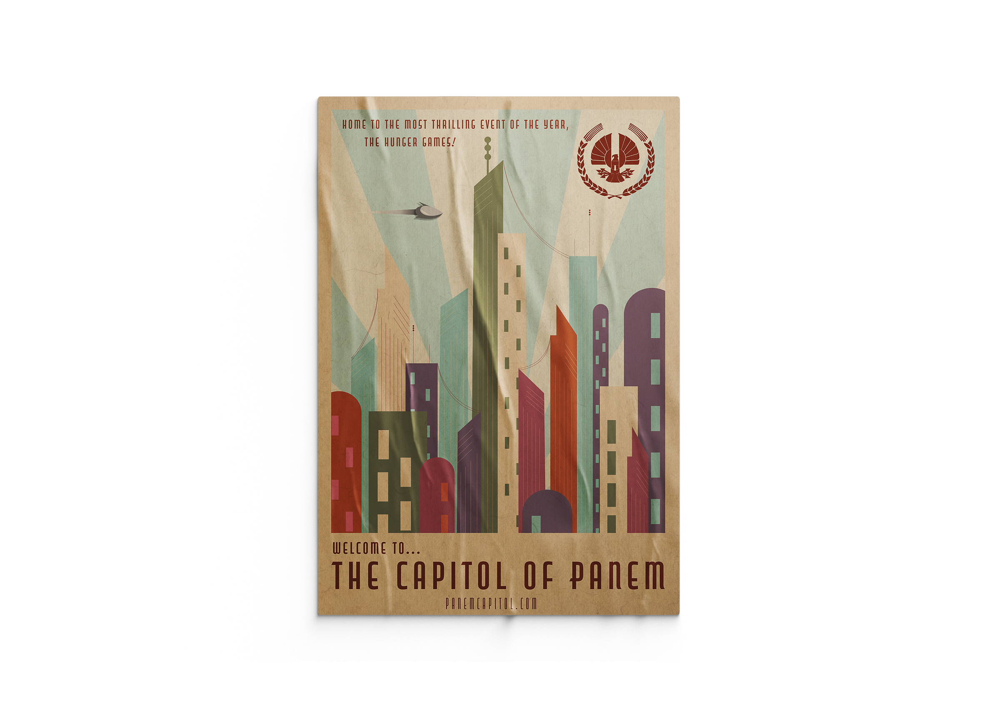
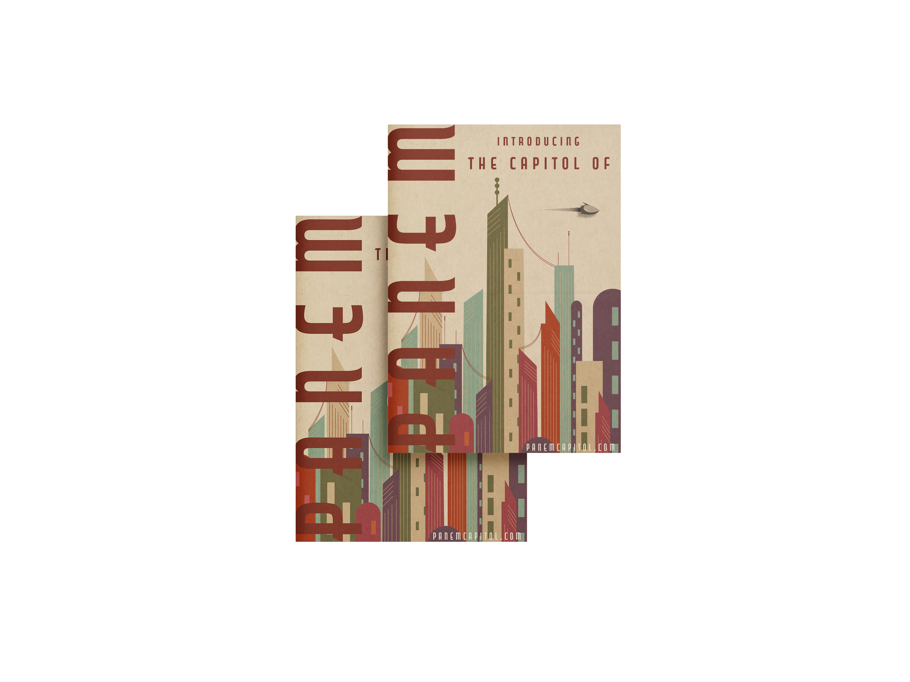


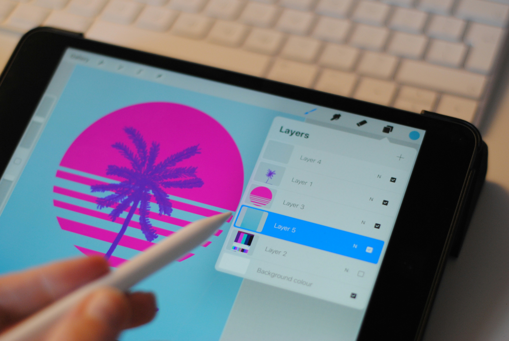
Digital Art Illustrations
Before I began the Visual Comunication Design program at San Francisco State University, I had a lot of fun creating digital illustrations using the application Procreate. Having knowledge of how to use this application helped me immensely when learning how to use the Adobe applications.


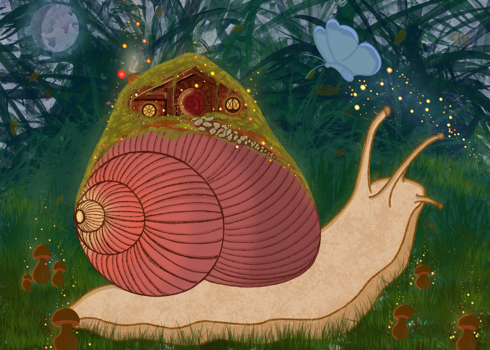